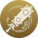
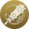

El primer gran lider de la Banda Arataki, muy activo en la zona de Hanamizaka de la ciudad de Inazuma ¿Nunca habias oido hablar de la Banda Arataki? ¿En serio?

DEF% > ATQ% > daño/prob critico
 

5 estrellas